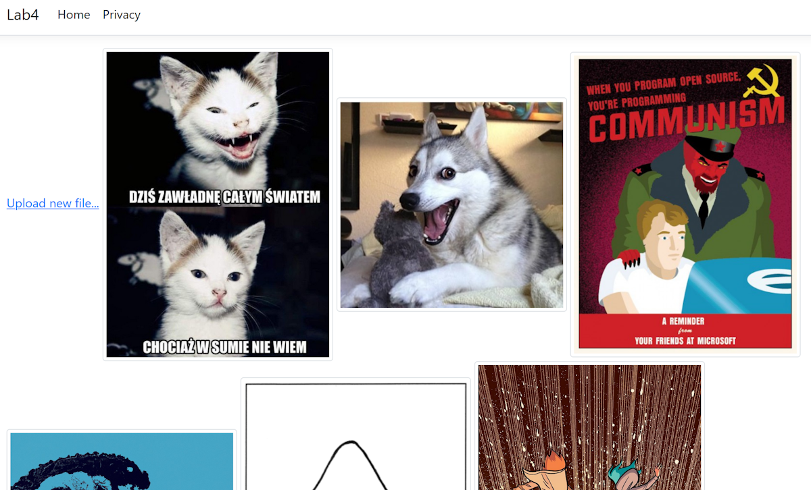
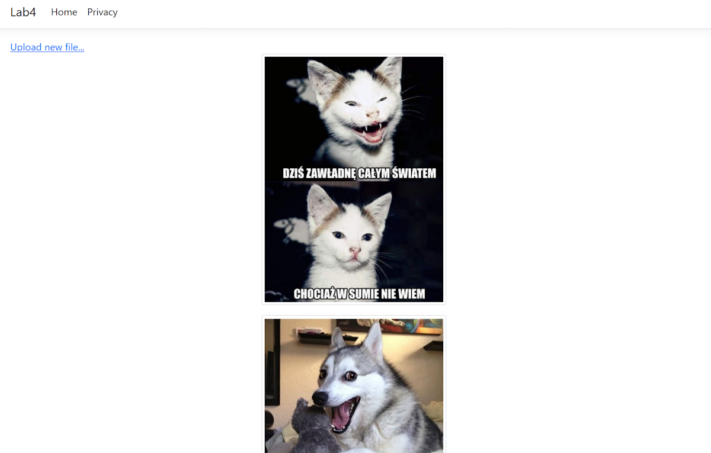
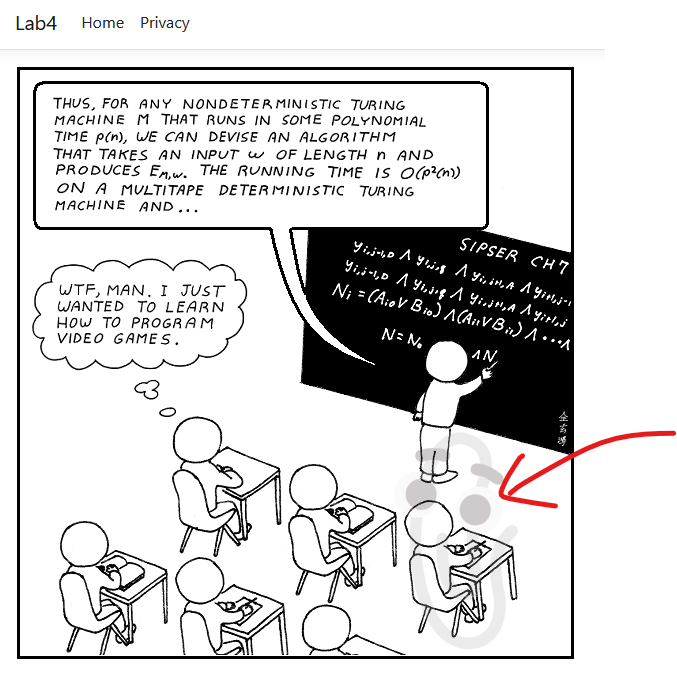

Laboratorium 4. Razor Pages – upload obrazków
Punkty: 8 · Wariant: Rider
- zapis plików metodami async
- upload bez wielokrotnego zapisu na dysk
- watermark ładowany jak najrzadziej (nie z dysku przy każdym uploadzie)
4.1 Projekt Razor Pages
Szablon „Web App (Razor Pages)". Profil uruchamiania: http.
4.2 Lista plików
Images + IWebHostEnvironment → wwwroot/images, metoda UpdateFileList() w OnGet().
4.3–4.4 Upload
Add → Razor Page Upload. Usuń Layout = null, model = UploadModel.
[BindProperty] IFormFile Upload, formularz enctype="multipart/form-data", link na Index: Upload new file....
Optymalnie (uwagi): strumień uploadu → Magick → WriteAsync (bez wcześniejszego OpenWrite/CopyTo).
4.5 Widok częściowy
Pages/Shared/_Image.cshtml – @model string, thumbnail 300px. Index: centered, jeden pod drugim.


4.6 Single
@page "{image}", [BindProperty(SupportsGet = true)] string Image, 404 gdy brak pliku. Partial z linkiem do Single.
4.7 Magick.NET + watermark
dotnet add package Magick.NET-Q8-AnyCPUPlik watermark.png w katalogu projektu. Composite w prawym dolnym rogu (Gravity.Southeast), alpha / 4.
Cache: singleton ładujący watermark raz; przy uploadzie tylko Clone().

4.8 Max 1 MB
ModelState.AddModelError("Upload", "Plik jest za duży (max. 1 MB)");
return Page();+ asp-validation-summary="All" na stronie Upload.